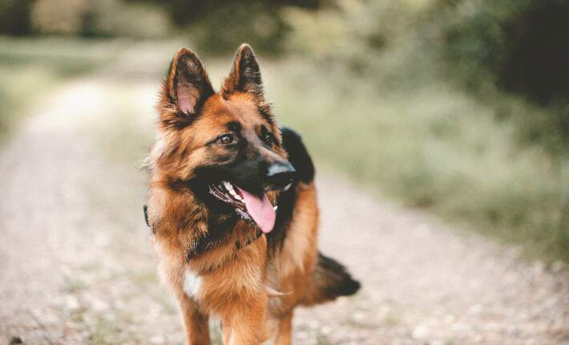
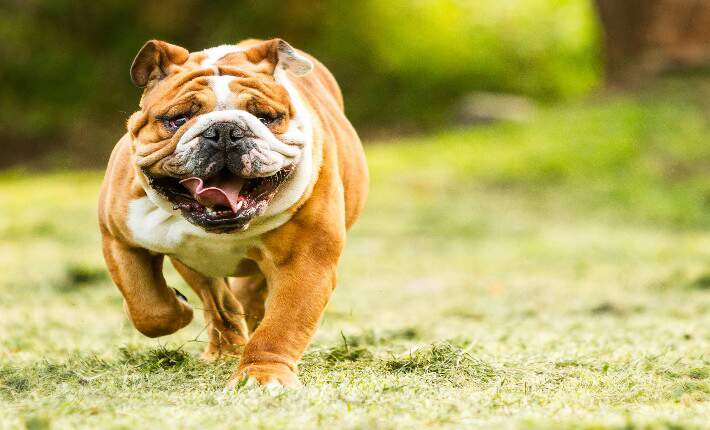
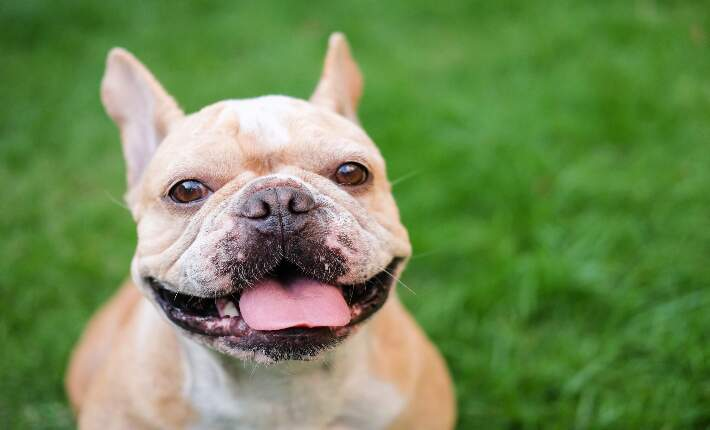
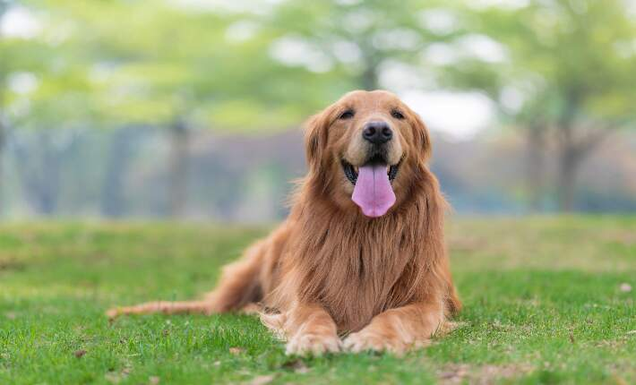
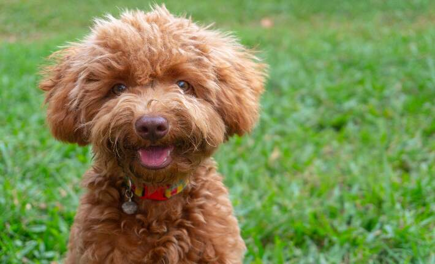

Labrador retrievers are easily recognized by their broad head, drop ears and large, expressive eyes. Two trademarks of the Lab are the thick but fairly short double coat, which is very water repellent, and the well known "otter tail." The tail is thick and sturdy and comes off the topline almost straight.

3.German Shepherd
German shepherd dogs is a well-proportioned dog. The head is broad and tapers handsomely to a sharp muzzle. The ears are rather large and stand erect. The back is level and muscular, and the tail is bushy and curves downward. The coat is thick and rough and may be black, tan, black and tan or gray. The coat should be harsh and of medium length; however, long-coated individuals occur often.

5.Bulldog
The English bulldog's neck is short and thick; the shoulders are massive, muscular and broad. The chest is deep and full, and the back is barreled and slightly arched. His rounded hips protrude slightly above the level of the back. The stubby tail is thick and either straight or screwed. His short, stocky legs have great muscle definition. They are splayed out and slightly bowed at the elbows and hocks to form a sturdy, base-wide stance.

2.French Bulldog
The French bulldog is not simply a miniature bulldog. The most notable characteristic is the "bat" ear, which occurs naturally and is never cropped or altered. Also unique to the breed is the skull

4.Golden Retriever
The golden retriever has a water-repellent coat that is wavy or flat and gold to cream in color. One of the most attractive features of this breed is the feathering on the neck, legs, thighs, underside and tail.

6.Poodle
All the Poodles share a square outline, with a long, elegant neck and a straight back. The tail is docked, but not short, so it can wave gaily.
Poodles tend to have a leggy appearance and a long muzzle combined with dropped ears. They move with a springy, lively gait.